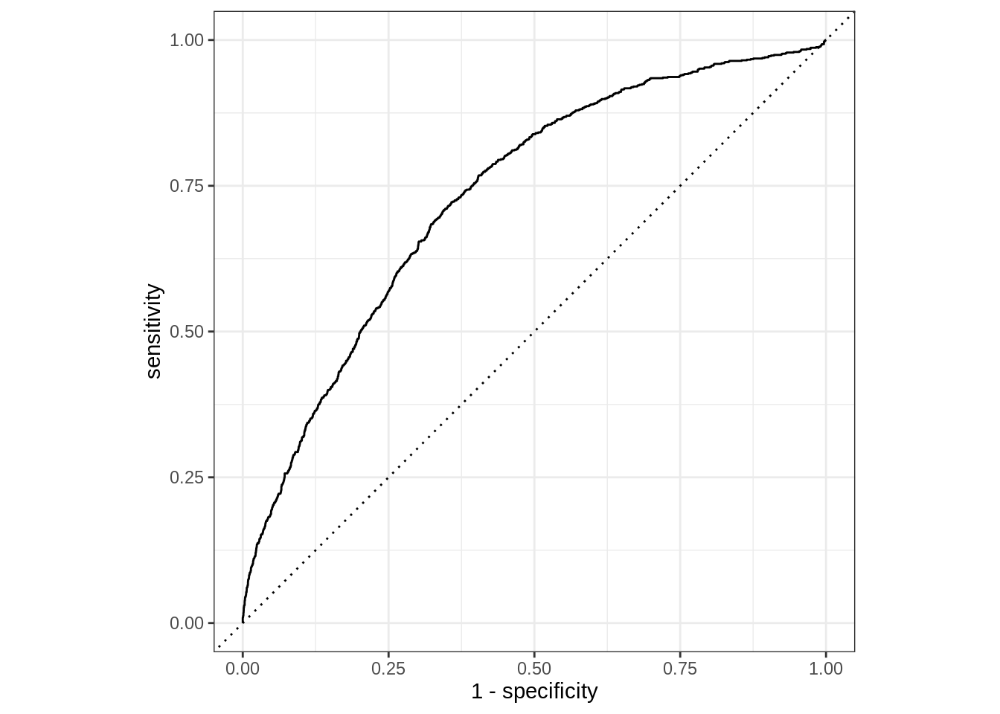

library(tidyverse)
library(tidymodels)
library(knitr)AE 10: Flight delays
Important
Go to the course GitHub organization and locate the repo titled ae-10-flight-delays-YOUR_GITHUB_USERNAME to get started.
Packages
Data
For this application exercise we will work with a dataset of 25,000 randomly sampled flights that departed one of three NYC airports (JFK, LGA, EWR) in 2013.
flight_data <- read_csv("data/flight-data.csv")Rows: 25000 Columns: 10
── Column specification ────────────────────────────────────────────────────────
Delimiter: ","
chr (4): origin, dest, carrier, arr_delay
dbl (4): dep_time, flight, air_time, distance
dttm (1): time_hour
date (1): date
ℹ Use `spec()` to retrieve the full column specification for this data.
ℹ Specify the column types or set `show_col_types = FALSE` to quiet this message.- Convert
arr_delayto factor with levels"late"(first level) and"on_time"(second level). This variable is our outcome and it indicates whether the flight’s arrival was more than 30 minutes.
flight_data <- flight_data %>%
mutate(arr_delay = as.factor(arr_delay))
levels(flight_data$arr_delay)[1] "late" "on_time"- Let’s get started with some data prep: Convert all variables that are character strings to factors.
#flight_data <- flight_data %>%
# mutate(
# origin = as.factor(origin),
# carrier = as.factor(carrier),
# dest = as.factor(dest)
# )
flight_data <- flight_data %>%
#go across all columns and convert that are characters to factors
#go across all columns and convert if is.character = TRUE to factors
#go across all columns and if is.character apply as.factor
mutate(across(where(is.character), as.factor))Modeling prep
- Split the data into testing (75%) and training (25%), and save each subset.
set.seed(222)
flight_split <- initial_split(flight_data)
flight_train <- training(flight_split)
flight_test <- testing(flight_split)- Specify a logistic regression model that uses the
"glm"engine.
flight_spec <- logistic_reg() %>%
set_engine("glm")Next, we’ll create two recipes and workflows and compare them to each other.
Model 1: Everything and the kitchen sink
- Define a recipe that predicts
arr_delayusing all variables except forflightandtime_hour, which, in combination, can be used to identify a flight. Also make sure this recipe handles dummy coding as well as issues that can arise due to having categorical variables with some levels apparent in the training set but not in the testing set. Call this recipeflights_rec1.
flights_rec1 <- recipe(arr_delay ~ ., data = flight_train) %>%
update_role(flight, time_hour, new_role = "id") %>%
step_dummy(all_nominal_predictors()) %>%
step_zv(all_predictors())- Create a workflow that uses
flights_rec1and the model you specified.
flight_wflow1 <- workflow() %>%
add_recipe(flights_rec1) %>%
add_model(flight_spec)- Fit the this model to the training data using your workflow and display a tidy summary of the model fit.
flight_fit1 <- flight_wflow1 %>%
fit(data = flight_train)
tidy(flight_fit1)# A tibble: 119 × 5
term estimate std.error statistic p.value
<chr> <dbl> <dbl> <dbl> <dbl>
1 (Intercept) 13.3 287. 0.0464 9.63e- 1
2 dep_time -0.00164 0.0000504 -32.6 1.04e-233
3 air_time -0.0349 0.00179 -19.5 1.75e- 84
4 distance 0.00533 0.00523 1.02 3.08e- 1
5 date 0.000227 0.000198 1.15 2.51e- 1
6 origin_JFK 0.0830 0.102 0.815 4.15e- 1
7 origin_LGA -0.0360 0.0983 -0.366 7.14e- 1
8 dest_ACK -12.4 287. -0.0434 9.65e- 1
9 dest_ALB -12.4 287. -0.0433 9.65e- 1
10 dest_ANC -3.75 928. -0.00404 9.97e- 1
# … with 109 more rows- Predict
arr_delayfor the testing data using this model.
flight_aug1 <- augment(flight_fit1, flight_test)- Plot the ROC curve and find the area under the curve. Comment on how well you think this model has done for predicting arrival delay.
flight_aug1 %>%
roc_curve(
truth = arr_delay,
.pred_late
) %>%
autoplot()
flight_aug1 %>%
roc_auc(
truth = arr_delay,
.pred_late
)# A tibble: 1 × 3
.metric .estimator .estimate
<chr> <chr> <dbl>
1 roc_auc binary 0.734Model 2: Let’s be a bit more thoughtful
- Define a new recipe,
flights_rec2, that, in addition to what was done inflights_rec1, adds features for day of week and month based ondateand also adds indicators for all US holidays (also based ondate). A list of these holidays can be found intimeDate::listHolidays("US"). Once these features are added,dateshould be removed from the data. Then, create a new workflow, fit the same model (logistic regression) to the training data, and do predictions on the testing data. Finally, draw another ROC curve and find the area under the curve. Compare the predictive performance of this new model to the previous one. Based on the area under the curve statistic, which model does better?
Putting it altogether
- Create an ROC curve that plots both models, in different colors, and adds a legend indicating which model is which.
Acknowledgement
This exercise was inspired by https://www.tidymodels.org/start/recipes/.